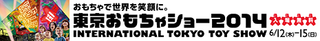
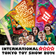
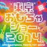
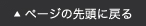

トップ ＞ バナー
-
東京おもちゃショー2014のバナーをご用意いたしましたのでご利用ください。
リンク先の設定は、http://www.toys.or.jp/toyshow/へお願い致します。

465ピクセル×60ピクセル
465ピクセル×60ピクセル

80ピクセル×80ピクセル

80ピクセル×80ピクセル
-
Windows パソコンをご利用の方は、保存したいバナーの上でマウスを右クリックし、
「名前をつけて画像を保存」を選択します。
Macintosh をご利用の方は、保存したいバナーの上でマウスを右クリックするか、
controlキーを押しながらマウスをクリックし、表示されたメニューから
「イメージをデスクトップに保存」を選択します。
